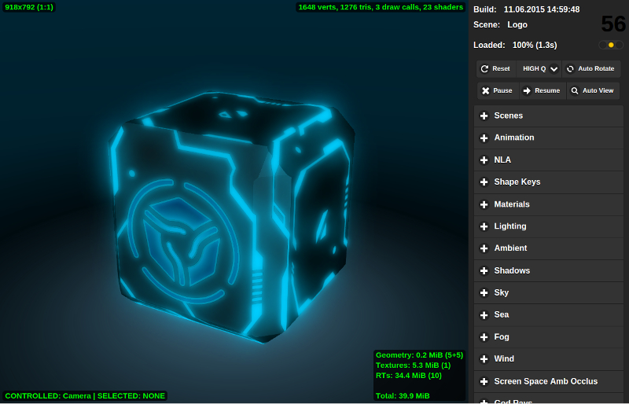

Просмотрщик сцен¶
Навигация¶
Управление камерой осуществляется мышью с нажатой кнопкой, а также клавишами W, A, S, D, R, F: вперед, влево, назад, вправо, вверх, вниз. Также поддерживаются стрелки и клавиши numpad. В режиме камеры Target возможно фокусирование на выделенный объект посредством нажатия клавишей Z или .(точка).
Боковая панель¶
Боковая панель содержит в себе три области: информационное табло, базовые кнопки управления и список выпадающих панелей, содержащий дополнительные элементы управления, разделённые по функциональному признаку.
{kind=link}
Список элементов управления сверху вниз¶
- Build
- Дата и время сборки движка. В версии для разработки показывает время загрузки страницы.
- Scene
- Название загруженной сцены, взятое из файла
assets.json. При наведении курсора мыши всплывает путь к файлу. - Loaded
- Процент и время загрузки.
- Reset
- Кнопка удаляет сохраненное название последней просмотренной сцены и перезагружает страницу, возвращая к сцене по умолчанию.
- LOW Q - HIGH Q - ULTRA Q
Выпадающее меню выбора профиля работы движка.
См.также
- Pause
- Приостановка рендеринга.
- Resume
- Возобновление рендеринга.
- Auto View
- Активация режима автоматического переключения сцен по списку, пауза между просмотрами 1 секунда.
- Scenes
- Двухуровневый список категорий и сцен из файла
assets.json. - Animation
- Управление анимацией. При просмотре анимированных моделей можно выбирать объект и переключать для него анимацию с помощью выпадающего меню, включать режим циклической анимации, останавливать и возобновлять анимацию, выставлять нужный кадр (при этом анимация должна быть остановлена).
- Materials
- Настройка свойств материалов. Материал выбирается с помощью выпадающего меню. В настоящий момент поддерживается изменение ограниченного ряда свойств.
- Lighting
- Настройка параметров прямого освещения. Источник света выбирается с помощью выпадающего меню. Поддерживается изменение цвета и интенсивности. Также на этой панели осуществляется настройка параметров времени суток и солнечного освещения.
- Ambient
- Настройка параметров освещения от окружающей среды. Поддерживается изменение цветов в полусферической модели освещения и интенсивности.
- Shadows
- Настройка параметров падающих теней, включая параметры каскадов теней и параметры смягчения краев теней.
- Sky
- Настройка параметров динамического неба, таких как цвет, параметры рассеивания солнечного света и т.д.
- Sea
- Настройка параметров рендеринга воды, включая переходы цвета по глубине и удаленности от берега, параметры пены, подповерхностного рассеивания, динамики волн и т.д.
- Fog
- Настройка параметров тумана, включая плотность и цвет.
- Wind
- Настройка параметров ветра, включая направление и силу.
- Screen Space Amb Occlus
- Настройка параметров взаимного затенения.
- God Rays
- Настройка параметров эффекта сумеречных лучей.
- Bloom
- Настройка параметров эффекта засветки ярким светом.
- Depth of Field
- Настройка параметров эффекта глубины резкости камеры.
- Color correction
- Настройка параметров цветовой коррекции, включая яркость, контрастность, экспозицию и насыщенность.
- Anti-aliasing
- Выбор метода сглаживания изображения (антиалиасинга).
- Audio
- На панели находится переключатель режима микширования. После включения на сценах со звуковыми источниками появляется интерфейс микшера.
- Stereo View
- На панели находится переключатель режима стерео-изображения.
- Debug
- На панели находится ряд инструментов отладки сцен, в частности переключатель режима просмотра сетки, переключатель режима просмотра постпроцессинговых стадий.
Индикаторы¶
- Счетчик количества кадров в секунду
- Находится в правом верхнем углу. Выводит усредненное и округленное значение за последние 1,5 секунды.
- Размер области рендеринга
- Находится в левом верхнем углу. Выводит размер области рендеринга в пикселах.
- Выбранный объект и контролируемый объект
- Находится в левом нижнем углу. Выводит название выбранного объекта и контролируемого объекта. Выбор объекта осуществляется мышью. Для получения прямого контроля над объектом (обычно в целях проверки физики) нужно нажать
Qи выбрать объект. Движение объекта осуществляется клавишамиW,A,S,D. Для выхода из режима контроля нужно нажатьQи “кликнуть” на пустом пространстве. Индикатор также показывает расстояние до выбранного объекта в единицах Blender’a (эквивалент метра). - Индикатор сложности сцены
- Находится в правом верхнем углу области рендеринга. Выводит количество вершин, треугольников и WebGL вызовов на основной рендер-сцене (т.е. не учитываются, например, вызовы по отрисовке динамических теней).
- Индикатор видео-памяти
- Находится в правом нижнем углу области рендеринга. Выводит количество видео-памяти, занимаемой геометрией, текстурами, буферами с результатами рендеринга (render targets), а также суммарное количество занимаемой памяти.
- Индикатор ошибок при загрузке сцены
- Находится под счетчиком количества кадров. Выводит ошибки и предупреждения при загрузке сцены. Красный свет означает ошибки, желтый - предупреждения, зеленый - загрузка сцены прошла успешно.
{kind=link}